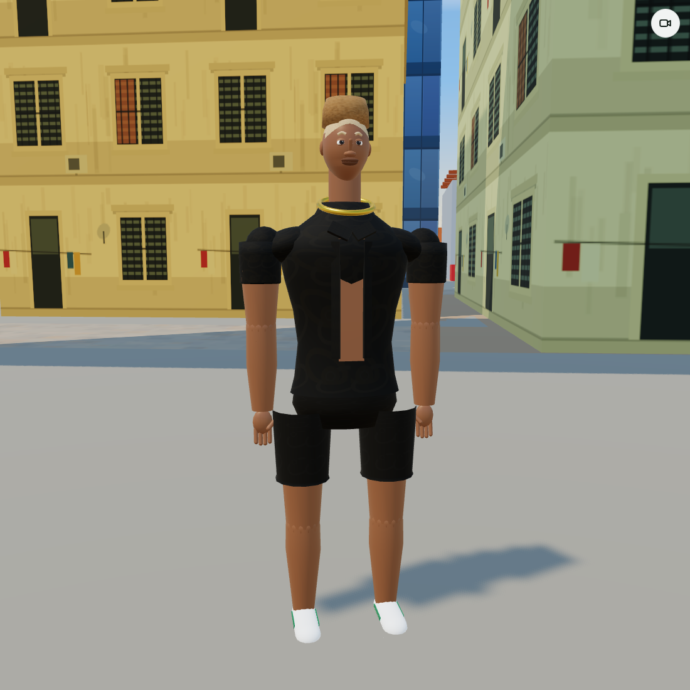
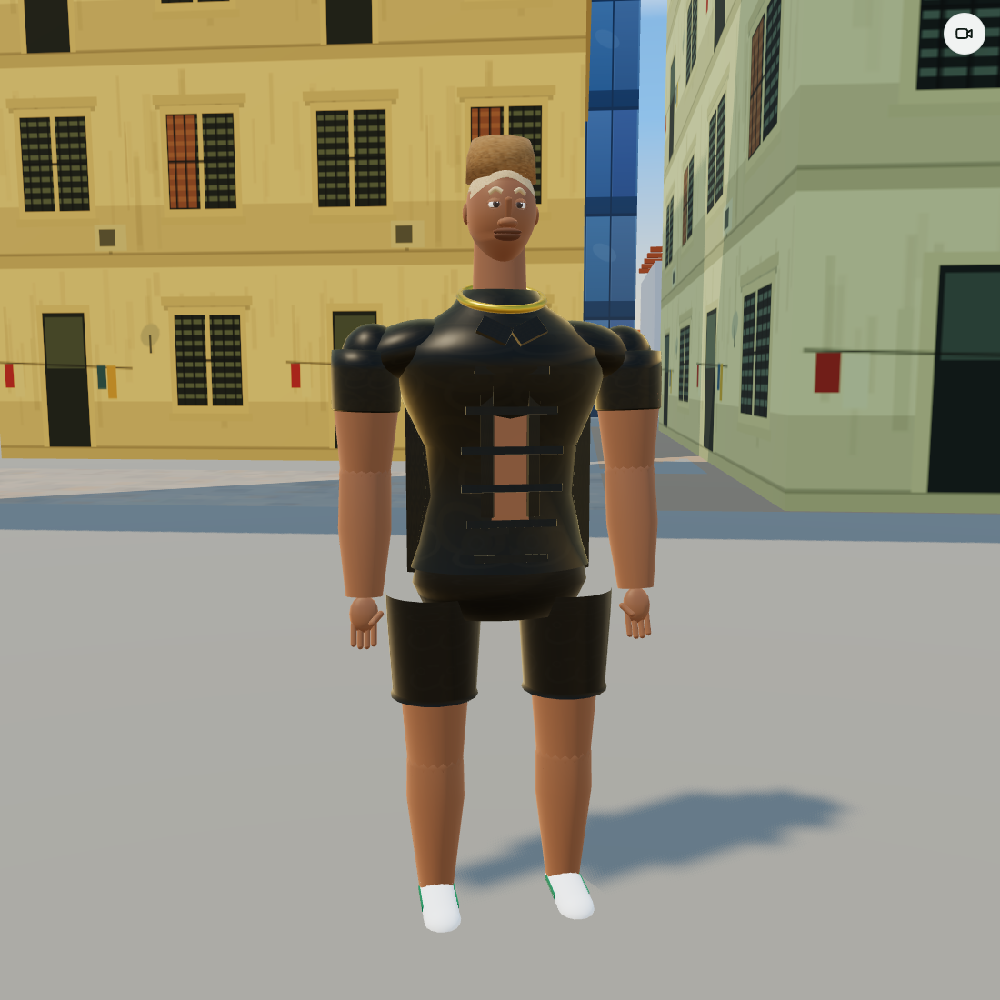
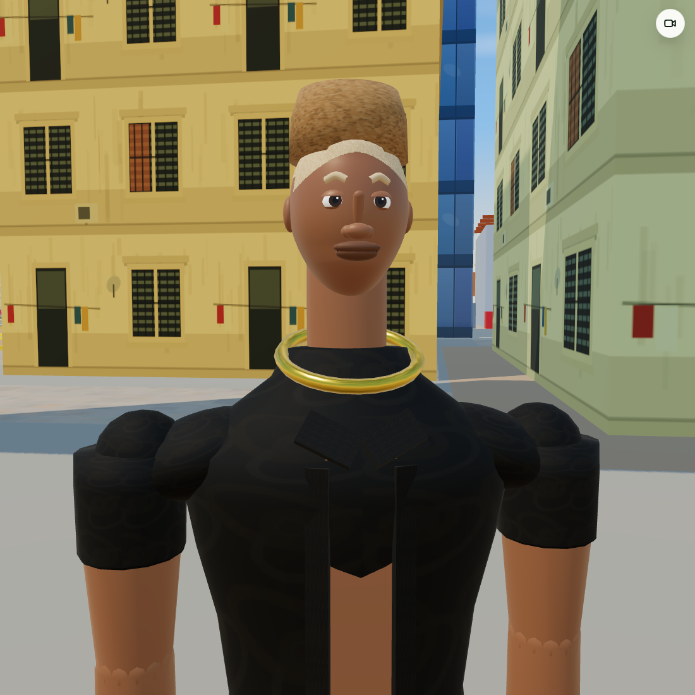
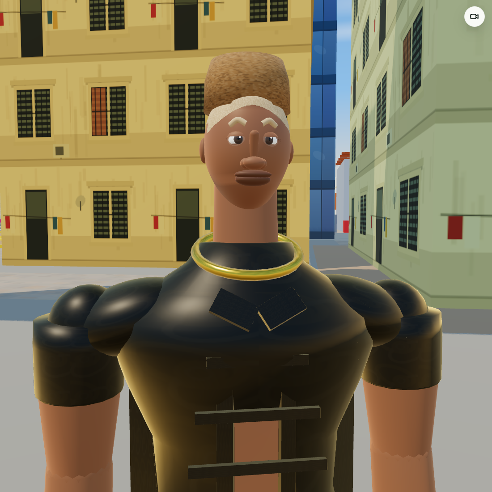
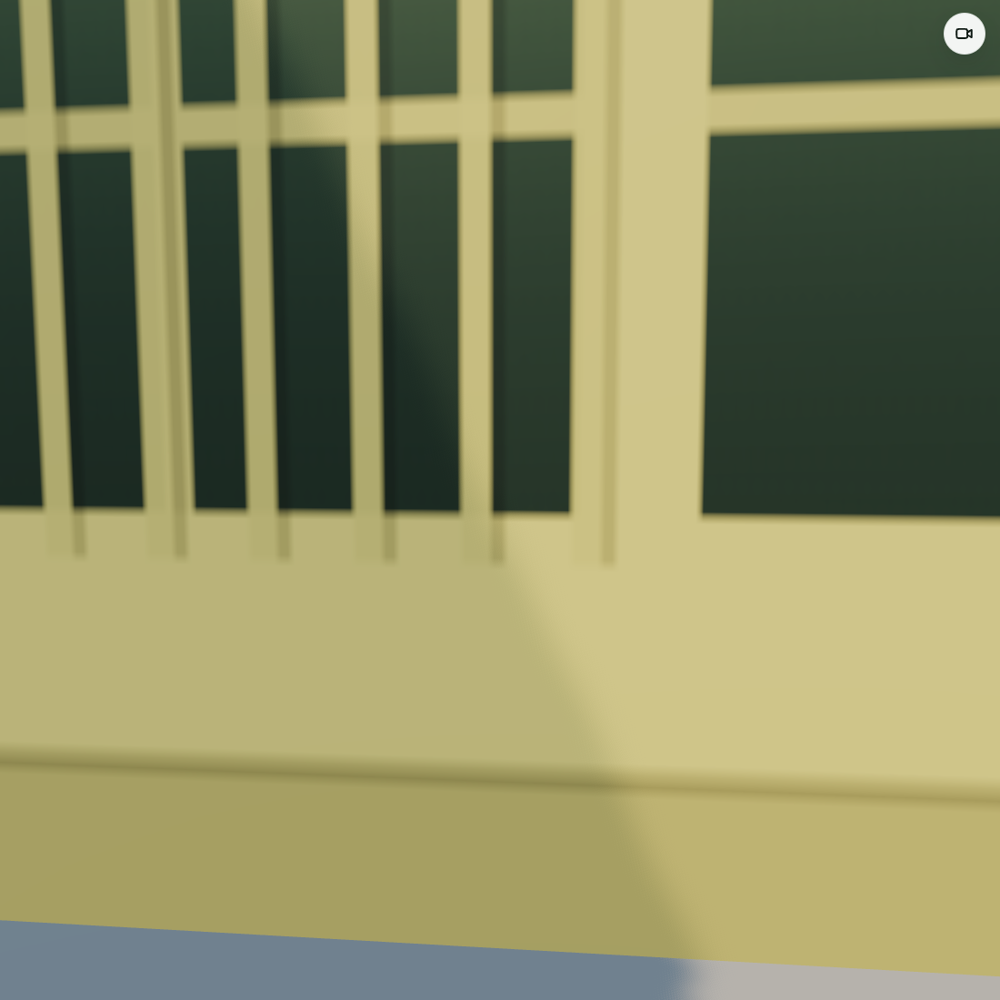
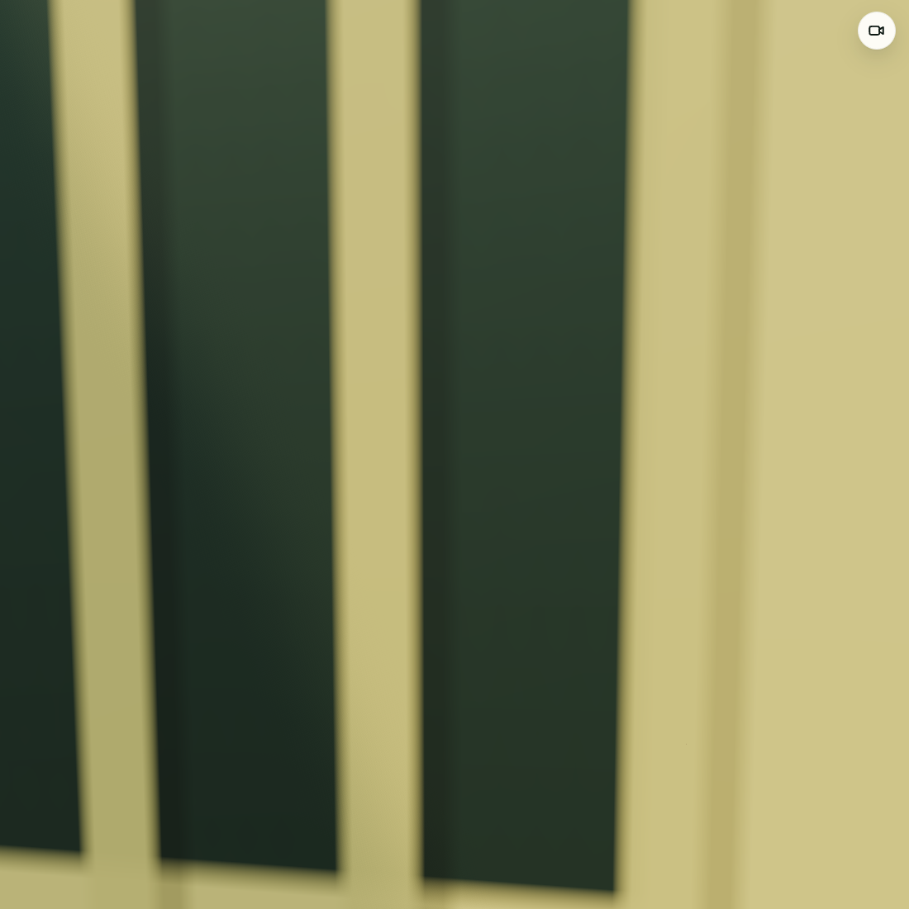
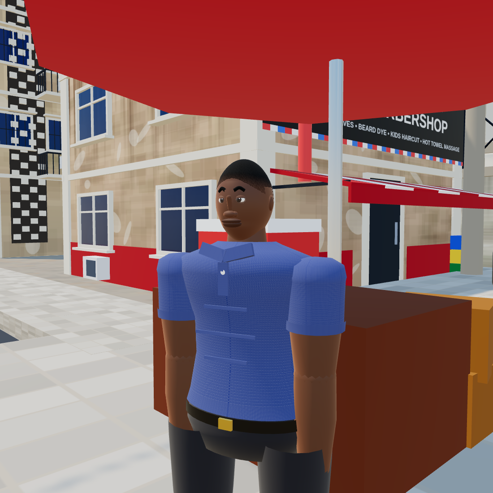
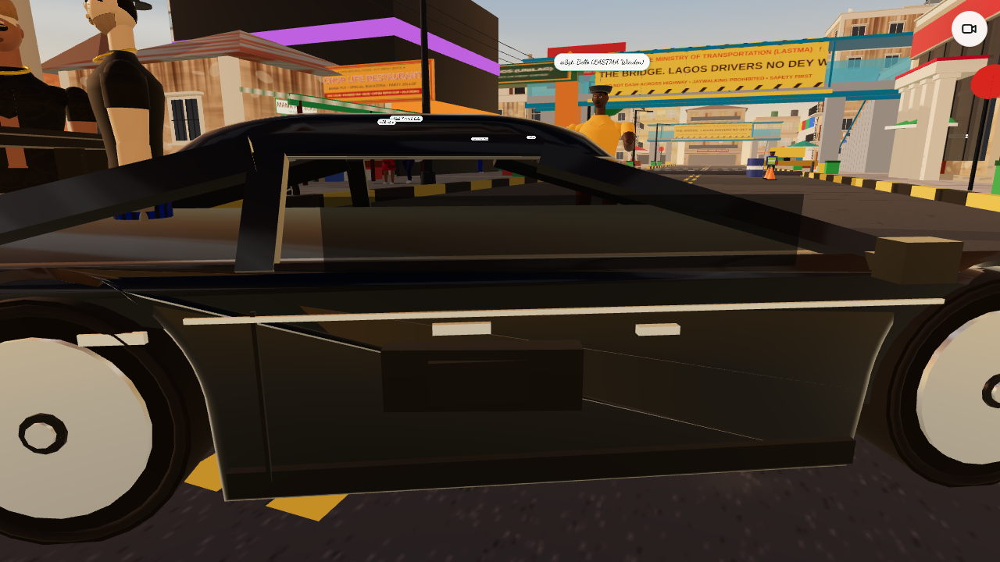
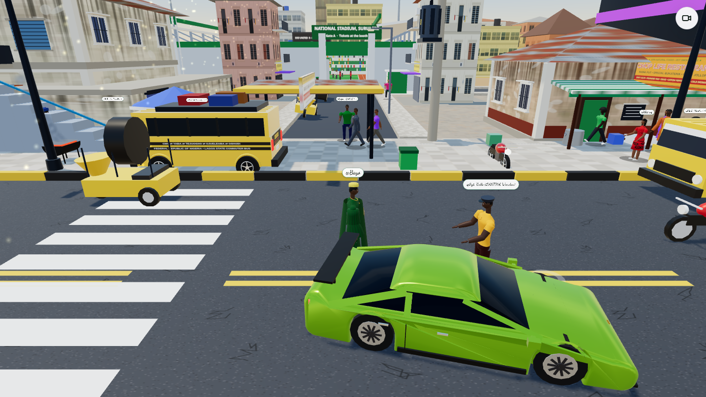
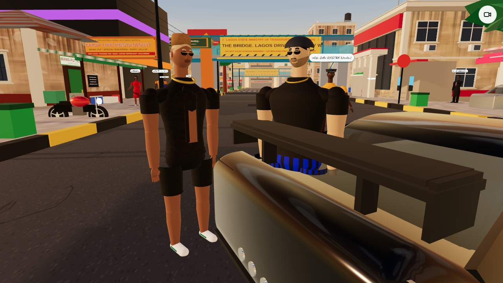

Character before / after
PR #41 · broadstreet-fidelity · neck, shoulders, polo streetwear · nigeria-life.vercel.app
Body — robot before vs fidelity after


Face comparison


Polo streetwear (latest human pass)



Supercar
No dedicated supercar BEFORE plate was captured — 08 is the Aventador AFTER close-up; 09–10 are Broad Street before vs people + supercar after.



Dock characters
